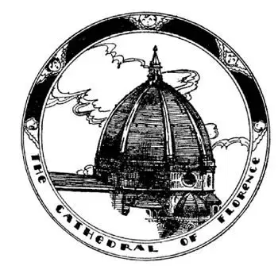
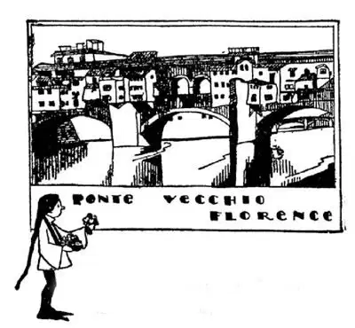
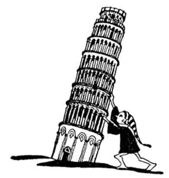

35
The Gates of Paradise and the Dome of Heaven
天堂之门和天国的穹顶

Down the length of Italy like the back of a sea monster is a ridge of mountains called the Apennines. To get from one side of Italy to the other side you have to go over, under, or through these Apennine Mountains, and trains do all three; over, under, through, winding in and out of one tunnel after another. There are forty-five tunnels in going just from Venice to a city across the Apennines called Florence.
Florence is a girl’s name meaning “flowering,” but Florence is also the name of this city. As the train comes into Florence it curves around the city and you see above the housetops, near the center of the city, a large dome that looks like the hub of a wheel about which the train is turning. Next to the dome is a big, square tower. Both the tower and the dome were built before Columbus was born. The dome looks like the dome of St. Paul’s in London, but, as a matter of fact, this dome is not like St. Paul’s. The dome of St. Paul’s is like it , and so is the dome of the Capitol in Washington like it, and so are all the other domes of that kind in the World like it, for this dome in Florence was the first one of that kind ever built and all others are copies.
Little domes and flat domes had been built before, but when the people of Florence were building a cathedral they wanted a different kind of dome on it, a dome that would be bigger and better than any other dome i. t. w. W. They wanted a dome so big that no one knew how to build it. Now a dome is built out of pieces of stone, and the stones have to cover a space beneath without falling, just like a bridge or an arch. No cement is strong enough to stick stones together so that they will not fall when placed across an open space, but if the stones can be held up by some wooden framework until every stone is in place, the wooden framework underneath can then be taken away and the stones will not fall, for all the stones push downward at the same time, and as all push downward together they get wedged in so tight that none can fall through. It is like a jam of people all trying at once to get through a door: they get so wedged in that none can go through.
But the dome on the Cathedral of Florence was to be so big no one knew how to hold it up while it was being built. It would have taken a whole forest of trees to build a big enough framework underneath. Some one said, “Let’s pile up a mountain of dirt and put pennies all through the dirt, then build the dome on top of this mountain. After the dome has been built people will cart away the dirt in order to get the money out of the dirt and that will leave the dome standing alone.” But this very foolish scheme was never tried.
At last two artists who were rivals said they knew a way to build the dome, but neither one would tell how he would do it. One artist was named Brunelleschi. As Brunelleschi is such a long name, I’m going to call him Mr. B. for short. The other artist was named Ghiberti, and I shall call him Mr. G. Mr. B. got the job and Mr. G. was made his helper. Mr. G. didn’t like to be only a helper, so he went about saying that Mr. B. did not really know how to build the dome at all, and would never finish it.

Mr. B. was the only one who knew how to build this “Dome of Heaven”
布先生是唯一知道如何建造这个“天国之顶”的人
Mr. B. and his men went on with the work for some time, until the sides of the dome reached the place where the stones had to be built over the center to cover the vast space beneath. This was the hard part, for the sides of the dome had to meet in the middle with nothing underneath to hold them up. Mr. G. kept on with his talking against Mr. B. , and even made fun of him, until Mr. B. , tired of being nagged in this way, made believe he was sick and stopped work. Time went on and Mr. B. staid home—still sick—and the dome stood unfinished. Mr. G. said, “Oh, Mr. B. isn’t really sick; he is only making believe he is sick—as a school-boy sometimes does—because he doesn’t know how to go on.” So the people of Florence went to Mr. B. ’s house and begged him to go on with the dome.
“I’m sick,” said Mr. B. “Mr. G. knows so much about building a dome, let him go on with it.”
So the people went back to Mr. G. and told him to go ahead. Then Ghiberti tried, but he was able to go only a little way and couldn’t go any farther.
So then the people went back to Brunelleschi again.
“If you’ll make that Ghiberti keep still and not say another word,” said Mr. B. , “I will go on as I started,” and he did, finishing the first and one of the most beautiful domes of its kind i. t. w. W. , and no one to this day knows exactly how he did it.
Although Ghiberti was such a poor “sport,” he was, however, a great sculptor. Right across the street from the cathedral with the dome which Brunelleschi built is a low, six-sided building called a baptistery, because they baptized children there. The doors of this baptistery are made of bronze, and on these doors Ghiberti made bronze figures and scenes of some of the Bible stories. One of these pictures in bronze shows Abraham about to sacrifice his son on the altar as he was told to do by God.
“They are fit to be the gates to Paradise!” said another great Florentine artist when he saw these doors. The artist who said this was named Michelangelo, and he lived in Italy at the same time as Columbus. Columbus was never at home; he was away from Italy almost all his life, discovering new countries. But Michelangelo never left Italy; he stayed at home. He spent his whole life there making beautiful drawings, paintings, sculptures, and buildings, for an artist in those days did every kind of artistic work, from making necklaces to churches, as well as painting and sculpture.

佛罗伦萨老桥
The shops on the Old Bridge sell souvenirs
老桥上的商店里出售纪念品
One day Michelangelo found a block of marble which some one had thrown away because it had a crack in it. Michelangelo said that he saw in this block of marble the figure of young David, so he set to work with his chisel and cut the figure of the young shepherd boy out of the marble. In Florence there are two huge copies of this statue several times bigger than a man, and in thousands of other places in the World there are small copies in plaster, and you may have one of these copies in your own home.
Many of these beautiful works of art are kept in buildings that used to be palaces. The palaces in Florence look more like prisons than palaces.
They were built that way, not to keep people in, but to keep people out. In olden times rich families lived in these palaces, and they were not good neighbors, for one family frequently quarreled or fought with another, so the palaces had to be strong as forts.
There are no water streets in Florence like those in Venice, but through Florence flows a river called the Arno, and across it are several bridges. On one of these bridges, called the Ponte Vecchio, which means the Old Bridge, are shops as on the Rialto in Venice. Most of the shops sell ornaments and souvenirs made out of silver, mosaic, leather, and tortoiseshell, for this is the kind of art work that present-day Florentines make to sell to the thousands of travelers that visit the city.
Towers are built to stand erect—straight up and down—as boys and girls are. But not far from Florence is a city named Pisa, which has a very peculiar tower that leans to one side. It is called the Leaning Tower of Pisa. The tower was built to stand straight, but the foundation has sunk on one side, so that the tower slants over as if it were going to fall. It has stood that way for hundreds of years, but is gradually leaning more and more, and if it cannot be stopped, some day it will fall.

比萨斜塔
Some day it may fall
有一天它可能会倒下
You remember I told you that marble was made from the bones of sea animals; but all marble is not alike—some is so coarse you can even see the bones in the stone. But near Pisa are stone mines called quarries, from which are cut blocks of stone of a very fine and smooth kind of marble called from the name of the place, Carrara. Ever since the time of Christ men have been cutting out blocks of marble from these quarries, and people send all the way to Carrara from this country and other countries when they want especially fine marble for a building or a mantel or a piece of sculpture.
【中文阅读】
有一条山脉的山脊从北向南纵贯整个意大利，就像海怪的脊背，这条山脉就是亚平宁山脉。从意大利的一边横穿到另一边，你就得从这条亚平宁山脉上面翻过去，或者从底下钻过去，或者从中间穿过去，而这三者火车都可以做到；在山脉上面、底下、中间，火车从一个又一个隧道钻进去又钻出来，蜿蜒而行。从威尼斯穿过亚平宁山脉到一个叫做佛罗伦萨的城市，就要经过45个隧道。
“佛罗伦萨”是一个女孩的名字，意思是“鲜花盛开”，但佛罗伦萨也是这个城市的名字。火车驶进佛罗伦萨，绕着城市转弯，这时你从火车向外眺望，在城市一大片屋顶之上，在靠近市中心的地方，能看到一个巨大的圆顶，看起来就像个轮毂，火车正绕着这个轮毂在转。圆顶旁边是一个高大的方形塔楼。塔楼和圆屋顶都是在哥伦布出生之前建造的。圆顶看上去像伦敦圣保罗大教堂的圆顶，但实际上我们只能反过来说圣保罗大教堂的圆顶像它，华盛顿的国会大厦也像它，世界上所有这类圆顶都像它，因为佛罗伦萨的这个圆顶是最先建造的，所有其他的这类圆顶都是仿照它建造的。
人们以前建造的都是小的圆顶和平的圆顶，但后来佛罗伦萨人在建造一个大教堂时，他们想在上面建一个与众不同的圆顶，要比世界上其他任何一个圆顶都更大更好。他们想造这么大一个圆顶，以至于没有人知道该怎么建。现在圆顶都是用一块一块的石头建成的，石头盖住下方的空间而且不会落下来，就像桥梁或拱门一样。任何水泥都没有那么强的力量能把石头粘在一起，放在一个空间上，而不落下去，但是如果石头能先被某种木质结构支撑着，直到每一块石头都各就各位，然后下面的木质结构就可以拿走，石头也不会落下来，因为所有的石头都同时往下挤，这时所有石头向下的合力让石头紧紧挤压在一起，变得严丝合缝，没有一块石头会从中掉下来。就像一大群人都要同时过一个门：他们就挤在一起了，谁也动不了，结果一个人也过不去。
但是佛罗伦萨大教堂的圆顶真是太大了，当时没有人知道在建造的时候该如何把它撑起来。要砍掉整片森林的树木才能在下面造一个足够大的木结构。有人说：“我们用土来堆座山吧，在土里放满硬币，然后就在这个土山上建起圆顶。圆顶建好后人们为了得到土里面的钱会把土用车运走，这样就只剩下圆顶立在那里了。”但是从来没有人尝试过这个愚蠢的计划。
最后有两个互相为对手的艺术家都说自己知道该怎样建造这个圆顶，但哪一个都不愿说该怎么建。一个艺术家叫布鲁内莱斯基。布鲁内莱斯基这个名字实在太长了，我就简称他“布先生”。另一个艺术家叫吉贝尔蒂，我就叫他“吉先生”。布先生接到了这个任务，而吉先生被任命为布先生的助手。吉先生当然不乐意自己仅仅充当助手，于是他开始对人说布先生根本不知道怎么建圆顶，他永远都建不成圆顶。
布先生带着自己的工人干了一段时间，直到圆顶的四周都已建好，只等着用石头把中间这个巨大的空间盖住。这是很难的部分，因为圆顶的四周要在中间合拢在一起而下面却没有任何东西把它托起来。吉先生还在说布先生的坏话，甚至还取笑他，直到布先生厌烦了他这样不断的指责，就装病，停工了。时间一天天过去了，布先生还待在家里——仍然病着——圆顶就那样一直没有完工。吉先生说：“哦，布先生根本没有病；他是在装病——就像上学的孩子有时会装病一样——因为他不知道该怎么继续下去了。”于是佛罗伦萨人到布先生家去请求他继续建造圆顶。
“我病了，”布先生说，“吉先生很擅长建造圆顶，让他继续建下去吧。”
于是人们回到吉先生那里让他去干。吉贝尔蒂就开始尝试，但他只让工程进展了一点点就再也干不下去了。
于是人们又回到布鲁内莱斯基那里，去恳求他。
“如果你们能让那个吉贝尔蒂保持安静，不再唠叨，”布先生说，“那我就会像当初那样继续干下去。”他说到做到，终于完成了世界上第一个圆顶，也是世界上同类圆顶中最漂亮的，迄今为止没有人知道他到底是怎样做到的。
尽管在这次“比赛”中吉贝尔蒂显得心胸狭隘，没有气度，但他却是个了不起的雕刻家。就在布鲁内莱斯基建造的圆顶的大教堂的街对面，有一座低矮的六面建筑，叫个洗礼堂，因为人们在这里给孩子行洗礼。这个洗礼堂的门是用青铜做的，在这些门上吉贝尔蒂雕刻了一些青铜人像和《圣经》故事中的一些场景。在其中一幅青铜画里，亚伯拉罕按照上帝的旨意正准备把自己的儿子供放到祭坛上。
“它们真的很适合做天堂的大门！”佛罗伦萨另一位艺术家看到这些门时说。说这话的艺术家叫做米开朗基罗，他和哥伦布是同一时代的意大利人。哥伦布从来都不在家；他几乎一生都不在意大利，而在外面发现新国家。但米开朗基罗从来没有离开过意大利；他始终待在家里。他一辈子的时间都用来创作美丽的素描、油画、雕像和建筑，因为那个时代的艺术家不但绘画雕刻，还做 各类艺术品：小到一根项链，大到一座教堂。
一天米开朗基罗看见了一块大理石，那是别人丢弃的，因为上面有道裂缝。米开朗基罗说他在这块大理石里看到了年轻大卫的人影，于是他拿起凿子劲头十足地动起手来，把这块大理石雕刻成那个年轻牧羊人的人像。在佛罗伦萨有两座巨大的大卫雕像的仿制品，比真人大好几倍，在世界上许许多多地方都有小型的大卫石膏雕像仿制品，你家里也许就有这样一个仿制品。
这些美丽的艺术品，其中很多都存放在原本是宫殿的建筑物里。佛罗伦萨的宫殿看起来更像是监狱。之所以建成那样，不是为了留住人，而是为了不让人进来。在以往，富裕的家族都住在这些宫殿里，他们不能和睦相处，经常互相争吵和打斗，所以宫殿必须建得像堡垒一样坚固。
佛罗伦萨没有威尼斯那样的水道，但有一条河流经佛罗伦萨，叫做阿尔诺河，河上有几座桥。其中一座桥叫做“Ponte Vecchio”，意思就是“老桥”，桥上有很多商店，就像威尼斯的里阿尔托桥一样。大部分商店里出售用银、马赛克、皮革和龟甲做成的装饰品和纪念品。因为这就是当今的佛罗伦萨人做的艺术品，只为了赚成千上万游客的钞票。
塔建成后都是竖立的——从上到下都是垂直的——就像男孩子、女孩子挺直的身体。但离佛罗伦萨不远有个叫比萨的城市，那里有一座很奇特的塔，它是朝一边倾斜的。它叫比萨斜塔。这个塔建成时也是竖立的，但是塔的基座往一侧沉陷，于是塔就往一边倾斜，好像要倒下来。几百年来它就那样矗立在那了，但一直在慢慢地向下倾斜，如果不能阻止，有一天它将会倒下。
你记得我介绍过大理石是由海洋动物的骨头变来的；但不是所有的大理石都是一样的——有的很粗糙，你甚至可以看到里面的骨头。但在比萨附近有一些石矿，叫做露天矿场，从那里开采出一块块质地细密光滑的大理石，这种大理石是以产地的名字而命名的，叫卡拉拉。从基督时代起人们就从这里的露天矿场开采大理石，当意大利各地和世界各国的人们需要优质的大理石用于楼房或壁炉饰面或一件雕刻作品，他们就会派人前来采购。